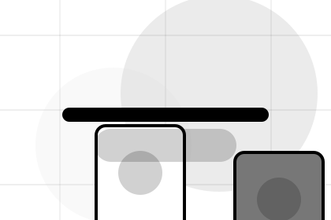
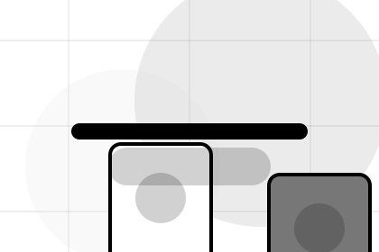
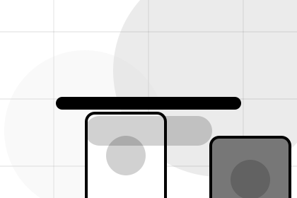
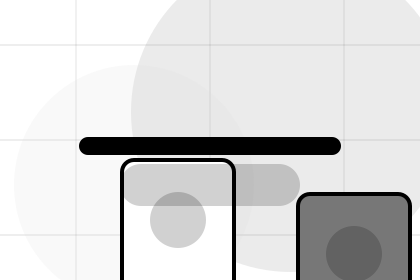
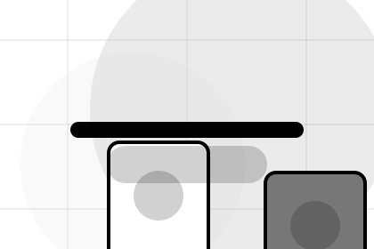
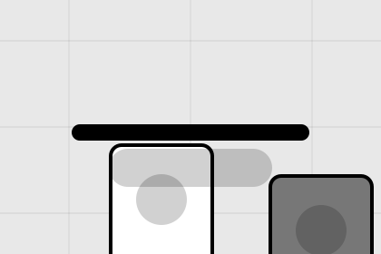

Better State
Promise defines what becomes clearer, easier, or safer when Market is the chosen route.
E-commerce
Monochrome catalogue system for speed and transaction trust.

Home / 02
Promise defines the better state Market is built to create, with enough detail to make the promise believable.
A marketplace catalogue with black-white product grids, tiny metadata, filter logic, and checkout routing. The section grounds that direction in concrete benefits, visible tradeoffs, and a next route visitors can use when the promise feels relevant.
Open Market
Promise defines what becomes clearer, easier, or safer when Market is the chosen route.
The benefit is tied to speed and transaction trust, not a vague quality claim.
Visitors get a linked path to compare the promise against services, standards, or examples.
Home / 03
Featured adds commerce context to the home route, using the monochrome catalogue system structure to support speed and transaction trust before visitors choose a next step.
Market uses monochrome product cards and focused copy to make the decision easier to scan, aligning the section with speed and transaction trust rather than filling space.
Open ShopFeatured gives the page a specific angle instead of repeating the navigation label.
The monochrome product cards show what to compare, what to avoid, and what matters most for e-commerce, marketplaces & digital commerce visitors.

The final cue points to a useful internal route so the section keeps the journey moving.
Home / 04
Categories adds commerce context to the home route, using the monochrome catalogue system structure to support speed and transaction trust before visitors choose a next step.
Market uses monochrome product cards and focused copy to make the decision easier to scan, aligning the section with speed and transaction trust rather than filling space.
Open CategoriesCategories gives the page a specific angle instead of repeating the navigation label.
The monochrome product cards show what to compare, what to avoid, and what matters most for e-commerce, marketplaces & digital commerce visitors.
The final cue points to a useful internal route so the section keeps the journey moving.
Home / 05
Deals adds commerce context to the home route, using the monochrome catalogue system structure to support speed and transaction trust before visitors choose a next step.
Market uses monochrome product cards and focused copy to make the decision easier to scan, aligning the section with speed and transaction trust rather than filling space.
Open DealsMarket structures deals around context, judgment, and a clear next route so visitors can compare the block quickly before they browse the market.
Browse MarketHome / 06
Trust gives the proof layer for home: standards, evidence, and reassurance that make the next decision feel grounded.
Instead of relying on vague claims, Market presents visible standards, process cues, and proof artifacts that help e-commerce visitors judge fit.
Open SellersVisible proof that helps visitors believe the claims behind trust.

The quality, safety, or operating expectation this section makes explicit.
What becomes clearer before someone decides whether to browse the market.
Home / 07
Sellers adds commerce context to the home route, using the monochrome catalogue system structure to support speed and transaction trust before visitors choose a next step.
Market uses monochrome product cards and focused copy to make the decision easier to scan, aligning the section with speed and transaction trust rather than filling space.
Open SupportSellers gives the page a specific angle instead of repeating the navigation label.
Home / 08
Reviews converts customer proof into a useful buying signal: the problem, the experience, and what changed afterward.
Proof stays believable by focusing on situation, service experience, and practical change rather than vague praise or unsupported results.
Open AccountWhat the visitor needed before choosing Market, written with enough context to feel real.

How the service, product, or support felt during the process, not just that it was good.
What became easier to decide, complete, buy, book, or trust after the interaction.
Home / 09
Questions handles buying doubts directly so visitors can understand timing, fit, limits, and the safest next step.
Answers are short by design: enough to remove hesitation, not so much that the page turns into documentation before the visitor can act.
Open ContactQuestions gives the page a specific angle instead of repeating the navigation label.
The monochrome product cards show what to compare, what to avoid, and what matters most for e-commerce, marketplaces & digital commerce visitors.

The final cue points to a useful internal route so the section keeps the journey moving.
Market starts with a focused intake so the recommendation matches the visitor's context, risk, timing, and readiness.
Each route explains inclusions, exclusions, documents, timing, and the decision points that affect final delivery.
The theme uses monochrome catalogue system, monochrome product cards, and catalogue filter, seller/customer support routing rather than a shared template rhythm.
Fashion-commerce grid hero
Select the closest route and Market keeps the next step, proof, and follow-up expectation aligned with speed and transaction trust.
Home / 10
Market closes the home route with a clear action, a quick reminder of the value, and a low-friction way to browse the market.
Visitors who are ready can use the primary action. Visitors who are still comparing can scan the section links, proof, and support routes before they browse the market.
Browse MarketThe final block keeps the choice simple: act now, compare one more proof route, or send enough detail for a focused response.
Browse Marketspeed and transaction trust
A marketplace catalogue with black-white product grids, tiny metadata, filter logic, and checkout routing. Home ends with a direct path to browse the market, plus enough context for visitors who still need to compare.

Browse Market